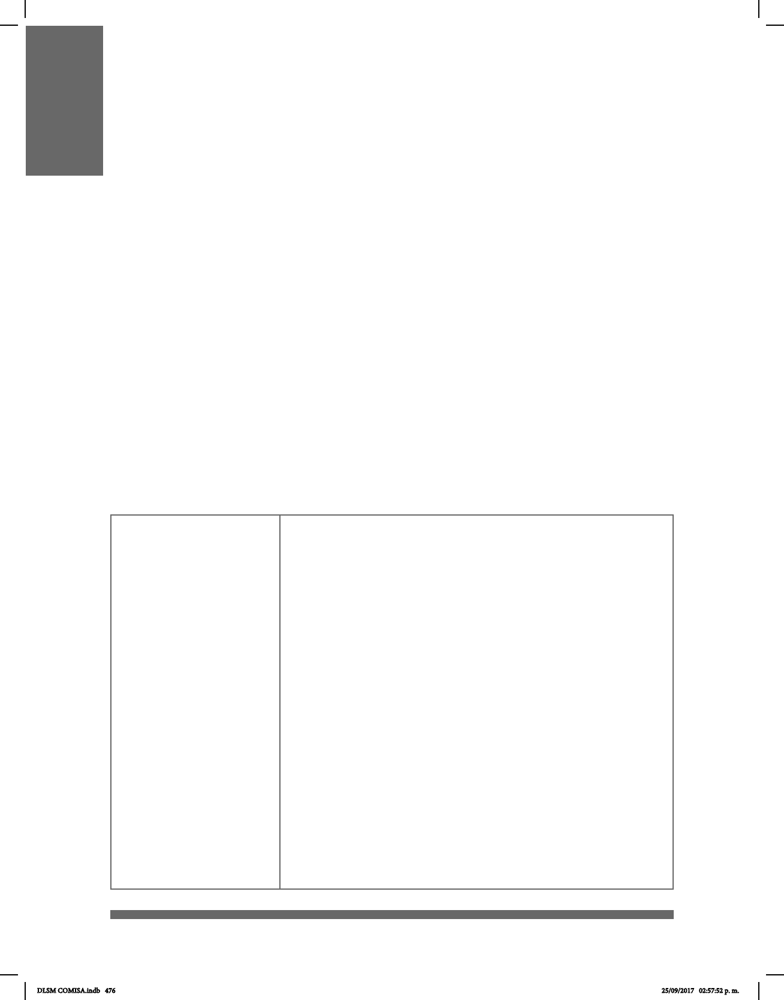

476
A continuación se presentan algunos temas especícos sobre el Marco Normativo
que pueden ser de tu interés y con los que puedes conocer acerca de los derechos
de la Comunidad Sorda y en general sobre el andamiaje que protege a las personas
con discapacidad tanto a nivel nacional como en la Ciudad de México:
Convención sobre los Derechos de las Personas con Discapacidad
La Convención sobre los derechos de las personas con discapacidad es un documento
de las Naciones Unidas que entra en vigor el 3 de mayo de 2008 en todas las naciones y
particularmente en el Estado Mexicano.
La CRPD (por sus siglas en inglés) es un instrumento internacional de derechos
humanos de las Naciones Unidas o Derecho internacional de los derechos humanos
destinado a proteger los derechos y la dignidad de las personas con discapacidad.
Partes de la Convención tienen la obligación de promover, proteger y garantizar el
pleno disfrute de los derechos humanos de las personas con discapacidad y garantizar
que gocen de plena igualdad ante la ley.
A continuación se rescatan algunos Artículos de la Convención que contienen temas que
pueden resultar de interés.
Artículo 2
Deniciones
A los nes de la presente Convención:
La “comunicación” incluirá los lenguajes, la visualización de
textos, el Braille, la comunicación táctil, los macrotipos, los dispositivos
multimedia de fácil acceso, así como el lenguaje escrito, los
sistemas auditivos, el lenguaje sencillo, los medios de voz
digitalizada y otros modos, medios y formatos aumentativos o
alternativos de comunicación, incluida la tecnología de la
información y las comunicaciones de fácil acceso;
Por “lenguaje” se entenderá tanto el lenguaje oral como la lengua de
señas y otras formas de comunicación no verbal;
Por “discriminación por motivos de discapacidad” se
entenderá cualquier distinción, exclusión o restricción por motivos de
discapacidad que tenga el propósito o el efecto de
obstaculizar o dejar sin efecto el reconocimiento, goce o ejercicio, en
igualdad de condiciones, de todos los derechos humanos y libertades
fundamentales en los ámbitos político, económico, social, cultural,
civil o de otro tipo. Incluye todas las formas de discriminación, entre
ellas, la denegación de ajustes razonables;
Por “ajustes razonables” se entenderán las modicaciones y
adaptaciones necesarias y adecuadas que no impongan una
carga desproporcionada o indebida, cuando se requieran en un caso
particular, para garantizar a las personas con discapacidad el goce
o ejercicio, en igualdad de condiciones con las demás, de todos los
derechos humanos y libertades fundamentales.
TEMAS ESPECÍFICOS SOBRE
MARCO JURÍDICO Y NORMATIVO
DLSM COMISA.indb 476 25/09/2017 02:57:52 p. m.